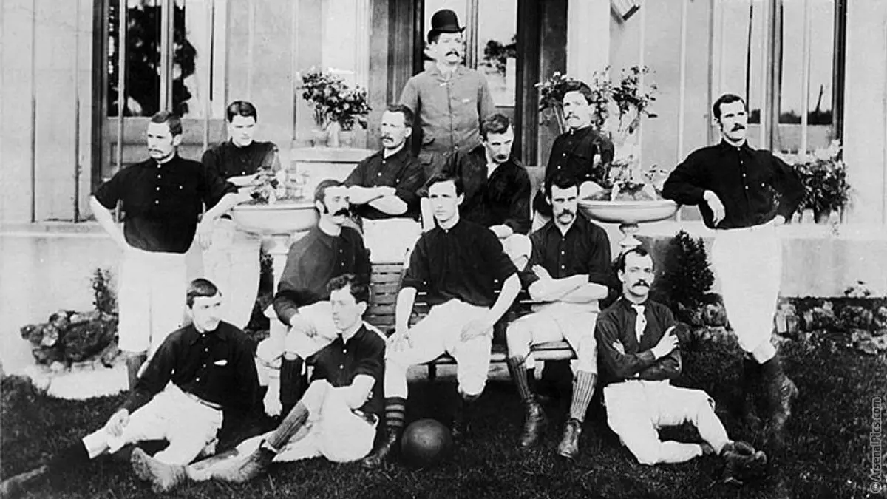
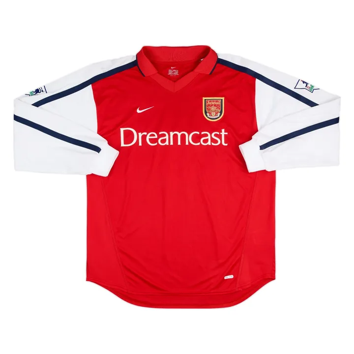
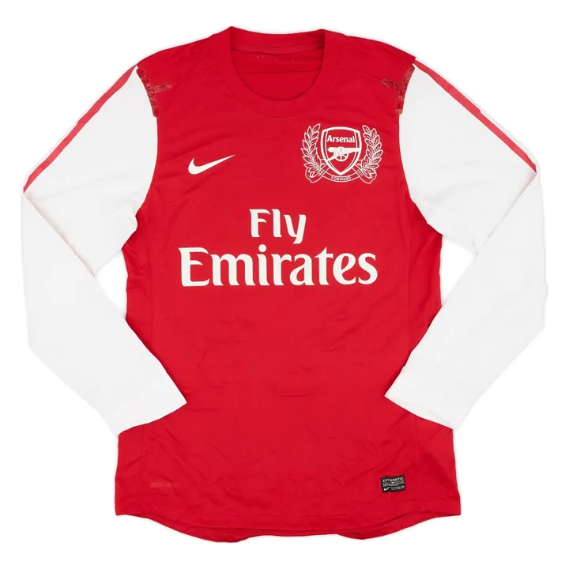
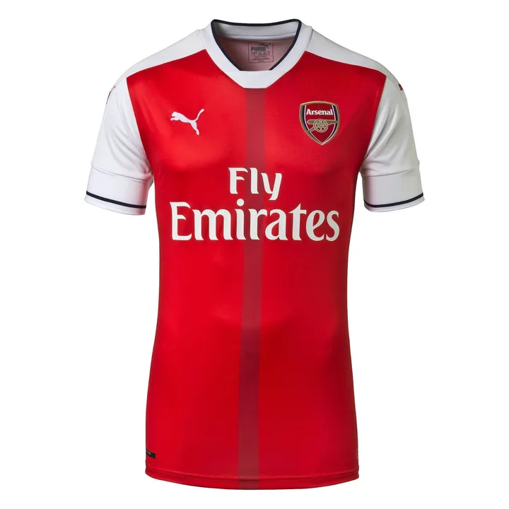
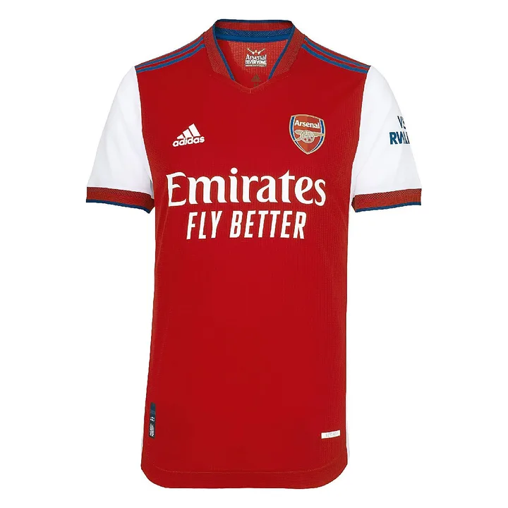
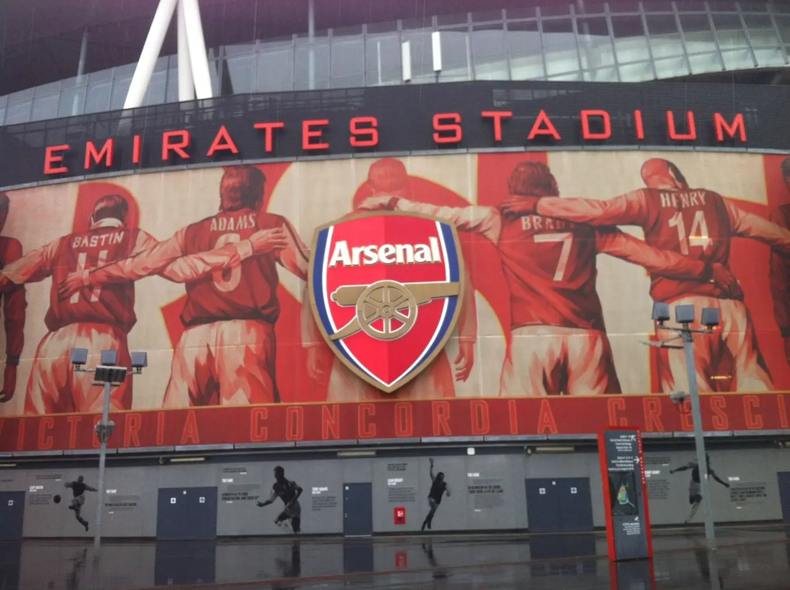

Sejarah Arsenal Football Club
Dari bengkel senjata di Woolwich ke puncak Inggris.
Arsip ringkas tentang perjalanan Arsenal: bagaimana klub ini lahir, kejayaannya sepanjang abad ke-20, dan proses di balik setiap gelar sejak tahun 2000 — lengkap dengan jersey yang dipakai di setiap musim.

14
Gelar juara Inggris
14
Piala FA — rekor
2
Piala Liga
2
Trofi Eropa
Abad ke-20
Sepuluh momen yang membentuk klub
Sebelum era modern, Arsenal sudah melewati perpindahan kota, dominasi 1930-an, dan tiga gelar Double. Ringkasan ini menjadi latar untuk halaman-halaman era sesudahnya.
Cerita lengkap asal usul-
1886
Lahir di Woolwich
Pekerja pabrik senjata Royal Arsenal mendirikan Dial Square, yang segera berganti nama menjadi Royal Arsenal.
-
1893
Klub selatan pertama di Football League
Sebagai Woolwich Arsenal, klub menjadi tim pertama dari selatan Inggris yang masuk Football League.
-
1913
Pindah ke Highbury
Henry Norris memindahkan klub ke London utara. Highbury menjadi rumah selama 93 tahun.
-
1919
Naik ke Divisi Satu
Arsenal terpilih ke kasta tertinggi dan tidak pernah terdegradasi sejak itu.
-
1930
Trofi pertama
Di bawah Herbert Chapman, Arsenal menjuarai Piala FA — awal dekade penuh gelar.
-
1931–38
Penguasa tahun 1930-an
Lima gelar liga dalam delapan musim, termasuk tiga beruntun pada 1933–1935.
-
1971
Double pertama
Tim Bertie Mee menjuarai liga dan Piala FA di musim yang sama.
-
1989
Detik terakhir di Anfield
Gol Michael Thomas di menit akhir memberi gelar liga di bawah George Graham.
-
1994
Piala Winners Eropa
Gol Alan Smith mengalahkan Parma di Kopenhagen.
-
1998
Double era Wenger
Musim kedua penuh Arsène Wenger ditutup dengan liga dan Piala FA.
2000 — sekarang
Sejarah per era
Setiap halaman berisi pencapaian, proses, dan foto jersey kandang resmi untuk tiap musim.
Bagian 1
2000–2005
Era Emas Wenger

Lima musim ketika Arsenal menjadi standar baru sepak bola Inggris: dua gelar liga, tiga Piala FA, dan satu musim tanpa kekalahan yang belum pernah diulang di era Premier League.
Baca era iniBagian 2
2006–2010
Rumah Baru, Tim Muda

Pindah ke Emirates Stadium berarti utang besar untuk pembangunan. Wenger merespons dengan proyek pemain muda — sepak bola indah, tetapi trofi tak kunjung datang.
Baca era iniBagian 3
2011–2015
Menghapus Puasa Gelar

Setelah kehilangan banyak pemain bintang, Arsenal mulai berbelanja besar. Hasilnya: puasa trofi sembilan tahun berakhir lewat dua Piala FA beruntun.
Baca era iniBagian 4
2016–2020
Akhir Sebuah Era

Arsène Wenger pamit setelah hampir 22 tahun. Klub melewati masa transisi yang sulit sebelum Mikel Arteta, mantan kaptennya, mengambil alih.
Baca era iniBagian 5
2021–sekarang
Proyek Arteta

Skuad termuda di liga, kepercayaan pada pelatih, dan tiga musim beruntun sebagai runner-up — hingga gelar liga pertama dalam 22 tahun pada 2025/26.
Baca era ini
Halaman khusus
Stadion
Dari Manor Ground, Highbury, hingga Emirates.